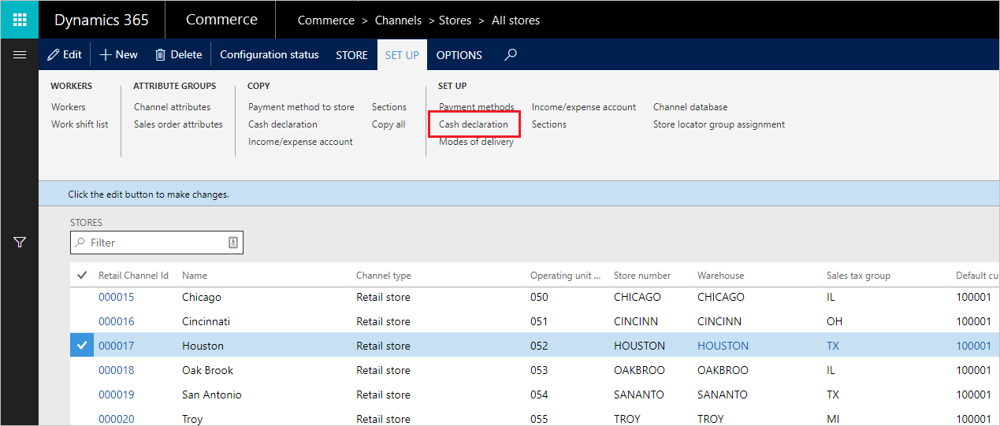
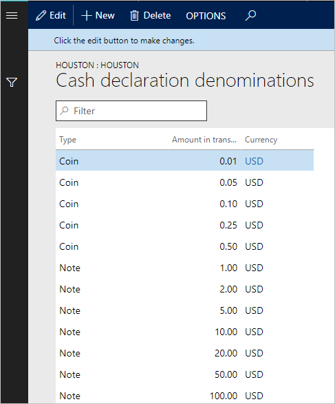

Bargeldnennwerte für die Verkaufsstelle (POS) konfigurieren
Important
Dynamics 365 Retail ist jetzt Dynamics 365 Commerce und bietet umfassende Handelsfunktionen für alle Kanäle – von E-Commerce über Shops bis hin zu Callcentern. Weitere Informationen zu diesen Änderungen finden Sie unter Microsoft Dynamics 365 Commerce.
Bargeldnennwerte für Banknoten und Münzen können Backoffice definiert werde, um von den Kassierern, von den Vertriebsmitarbeitern und von Managern in Ihrem Unternehmen in POS verwendet zu werden. Diese Nennwerte können verwendet werden, um bei der Bargeld-Inventur für die Berechnung des Tagesumsatzes oder für ein schelles Produktangebot verwendet werden.
Nennwerte definieren
Die Nennwerte werden pro Laden unter der Option Einstellungen > Bargelddeklaration von der Laden-Eigenschaftenseite eingerichtet.

Nennwerte definieren:
- Klicken Sie auf Neu.
- Geben Sie den Typ an (Banknote oder Münzen).
- Geben Sie den Betrag ein (Wert).

Funktionsprofil konfigurieren
Wenn in bar am POS bezahlt wird, kann der Benutzer die Währungen rasch verwenden, um den vom Kunden bezahlten Betrag einzugeben. Im Funktionsprofil können Sie die beiden Optionen für die Anzeige für den Nennwert in POS sperren konfigurieren.
- Größer oder gleich fälligen Betrag: Standardmäßig zeigt POS nur die Hinweisnennwerte an, die größer als der fällige Betrag sind, der das Einnotenanbieten zulässt. Wenn beispielsweise der fällige Betrag $7,50 POS ist, würden die folgenden Nennwerte angezeigt: EUR 10, 20, 50 und 100. Wenn Sie einen dieser Beträge berühren, wird automatisch das Zahlungsmittel des Verkaufs für diesen Betrag ausgefüllt. Die $1 und $5 Noten werden nicht angezeigt, da diese Beträge kleiner sind als der fällige Betrag.
- Alle Nennwerte: - Wählen Sie diese Option aus, um alle Hinweisnennwerte in POS, unabhängig vom fälligen Betrag immer anzuzeigen. Das bedeutet, dass der Benutzer eine Kombination von Hinweisen verwenden kann, um den fälligen Betrag zu erreichen. Wenn beispielsweise der fällige Betrag $25.00 ist, kann der Benutzer $20 und $5 wählen, um den Verkauf abzuschließen.